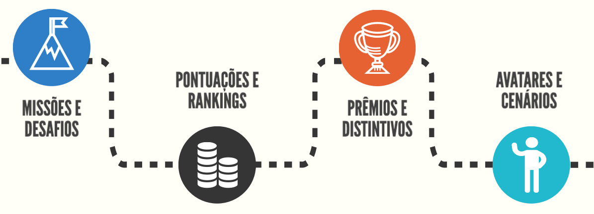
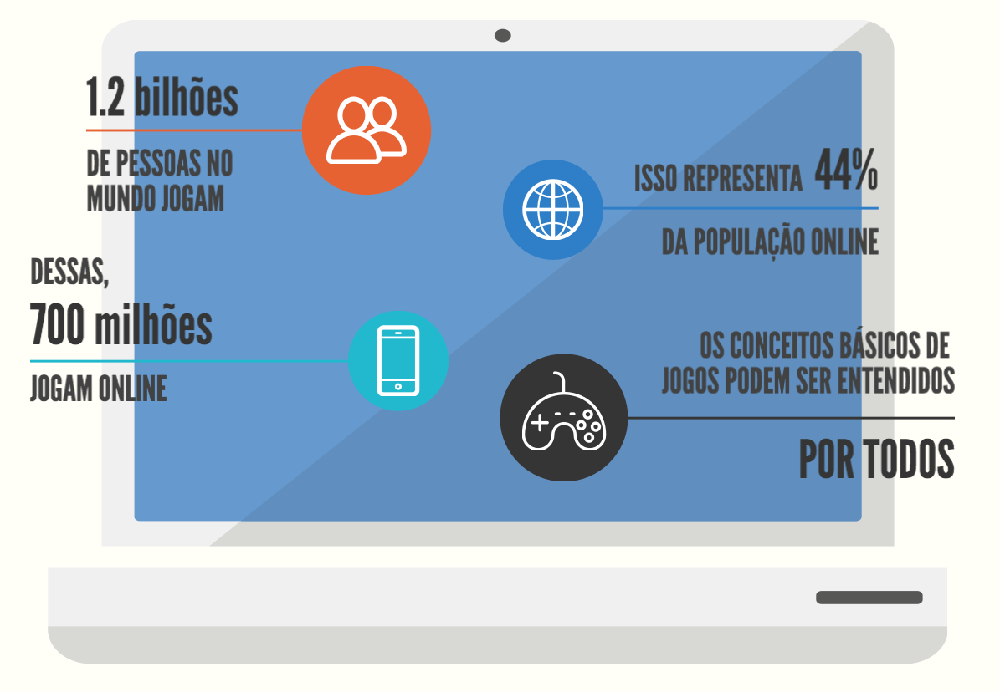
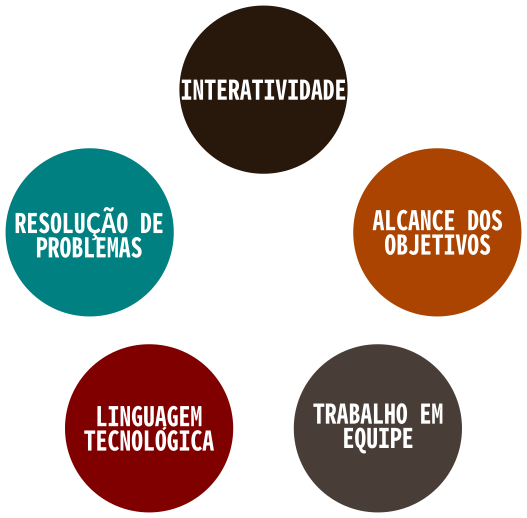
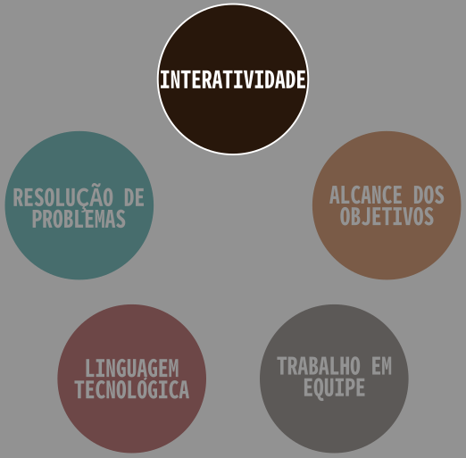
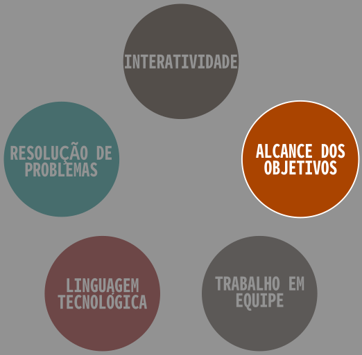
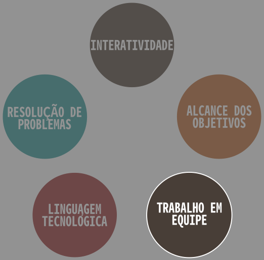
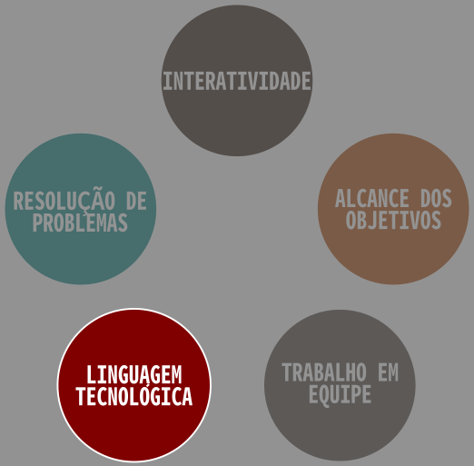
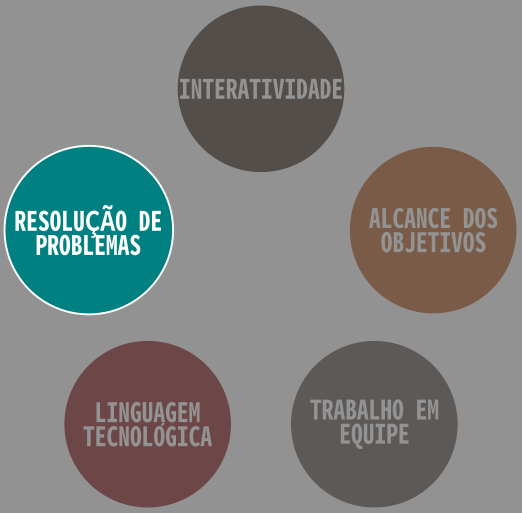

Eduardo Elias Ribeiro Junior (ESALQ-USP)
Seminários Preparação Pedagógica
O que é gamificação?
Por que gamificar o ensino?
Equívocos sobre gamificação
Estudos de casos
Conclusão
O que é gamificação?
Gamificar é criar dinâmicas, usar recursos de games ou jogos que engajem pessoas para atingir um determinado objetivo.
Inclusão de brinquedos em produtos alimentícios (fast foods);
Programa de milhagem em companhias aéreas;
Programas de fidelização dos clientes.
Anos 2000: Popularização dos jogos e debates mais intensos sobre jogos eletrônicos;
Ano 2002: Criação da Serious Games Initiative para encorajar o desenvolvimento jogos como soluções de questões de gestão e política empresarial;
Anos 2002-2010: Diversas propostas de uso de jogos nas áreas da saúde, treinamentos militares e corporativos, e aplicações no ensino;
Ano 2010: Criação do termo Gamification por Jesse Schell, designer de jogos, em uma conferência da D.I.C.E.
Como prôpor uma plataforma gamificada?

Por que gamificar o ensino?

“Jogadores normalmente apresentam persistência, ousadia, atenção aos detalhes, criatividade na solução de problemas - todas as habilidades que, idealmente, devem ser demostradas na escola”
- The Education Arcade no MIT
– Jane McGonigal, 2010.


Há
Diferentes cenários;
Diferentes personagens;
Diferentes acontecimentos.
Os alunos precisam refletir para tomar uma decisão.

Há
Missões e desafios;
Pontuações (rankings);
Premiações
que dão um propósito lúdico ao aluno.

Para
Completar missões;
Contornar acontecimentos;
Alcançar objetivos
deve-se combinar recursos e habilidades com colegas.

O uso da tecnologia
Celular;
Computadores;
Tablets
é familiar à nova geração.

Contornar as situações-problemas propostas exige
A concentração e reflexão;
Organização dos recursos e informações;
O uso da criatividade;
entre outros.
Equívocos sobre a Gamificação na Educação
Estudos de caso
Transformando o ensino de matemática básica.
Plataforma para prendizado de idiomas de forma divertida.
Duolingo
Conclusões
Dúvidas?